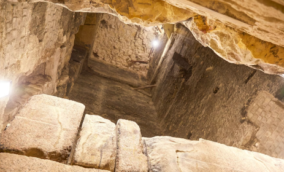
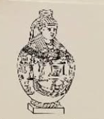
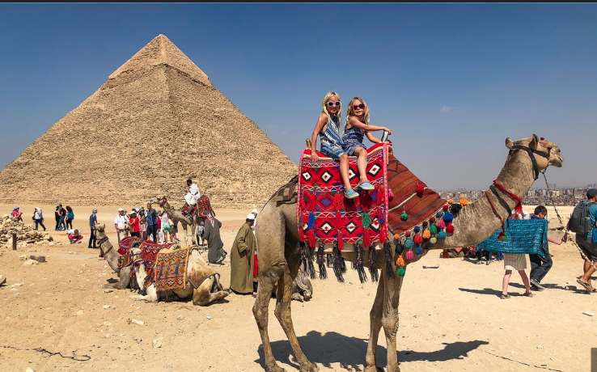
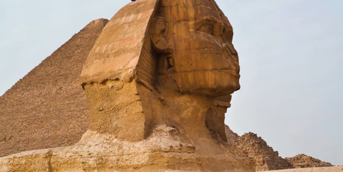
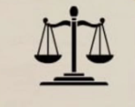

Exploring the history, purpose, and legacy of Egypt’s pyramids
The Great Pyramids were more than just monumental tombs—they were intricately designed structures filled with symbolism and purpose. Burial chambers were built to store treasures meant to accompany pharaohs into the afterlife, reflecting their beliefs in immortality. Walls adorned with hieroglyphs and inscriptions told stories of the rulers’ lives, achievements, and spiritual faith. Even the air shafts, once thought to serve as ventilation, are now believed to hold religious or astronomical significance, aligning with the stars and reinforcing the pyramids’ deep connection to ancient Egyptian spirituality.
The pyramids of Egypt were constructed with profound spiritual and cultural significance. They were designed not only to protect the pharaohs and their treasures for the afterlife but also to serve as sacred vaults preserving texts, spells, and prayers meant to guide them beyond death. The very shape of the pyramid symbolized a divine connection, believed to represent the rays of the Sun God Ra, reinforcing its role as both a tomb and a monument of worship dedicated to the gods.
The pyramids today stand as one of the world’s most iconic tourist attractions, drawing millions of visitors and generating billions in revenue for Egypt. Tourism around these ancient wonders plays a vital role in supporting the country’s GDP, making it a cornerstone of the national economy. However, the industry has faced challenges, with tourist numbers dropping dramatically from 14.7 million in 2010 to just 3.5 million in 2020, highlighting the need for revival strategies to sustain this crucial sector.
The pyramids, though enduring for thousands of years, now face serious threats from modern challenges. Natural erosion and urban pollution continue to wear away the ancient stones, while over-tourism puts additional strain on their fragile structures. Climate change further accelerates deterioration, with rising temperatures and shifting weather patterns increasing the risk of long-term damage. Preserving these wonders requires urgent attention to protect them for future generations.
To safeguard the pyramids, Egypt has implemented strict laws on excavation and heritage preservation, ensuring that these monuments are protected from misuse or unauthorized access. Structural reinforcements are carried out on weakened sections to maintain stability, while advanced technologies such as AI, laser scanning, and remote sensing are being used to monitor their condition with precision. Additionally, robust security measures, including surveillance systems and on-ground guards, help protect these treasures from both natural and human threats, ensuring their legacy endures.
The pyramids stand as timeless symbols of Egypt’s rich history, culture, and economic importance. While they face modern threats from erosion, climate change, and over-tourism, ongoing preservation efforts are helping safeguard their grandeur. Through careful protection and innovation, these ancient wonders will continue to inspire and educate future generations, keeping the legacy of Egypt alive for centuries to come.